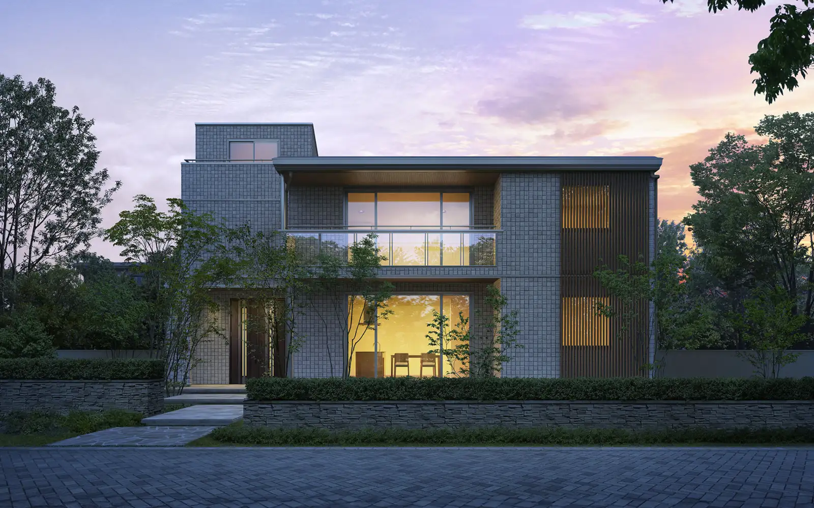
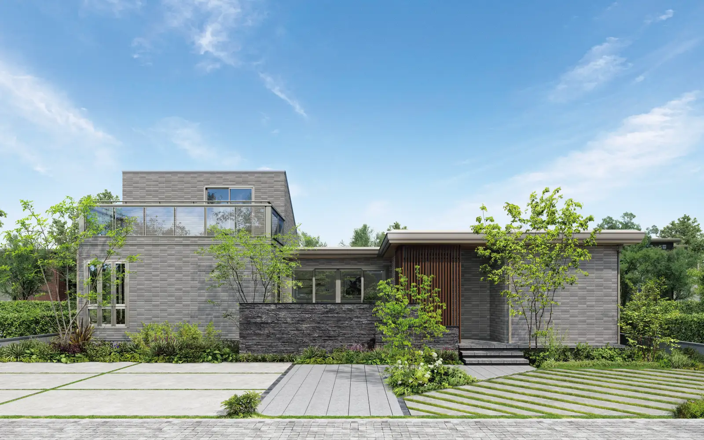
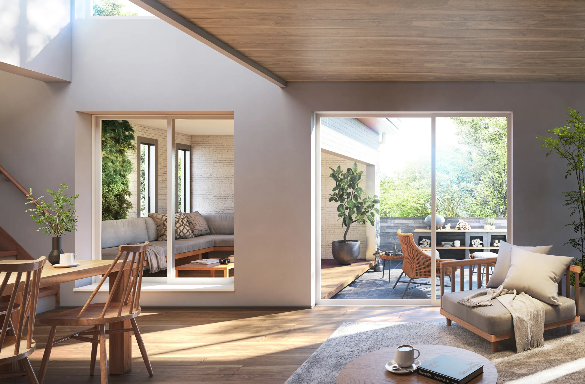
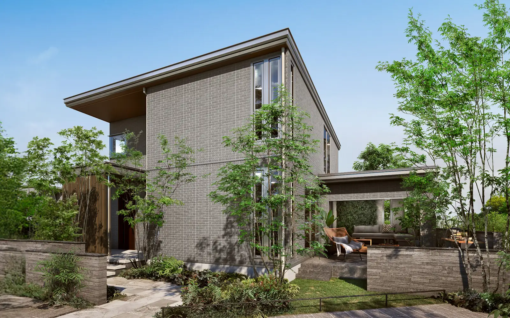
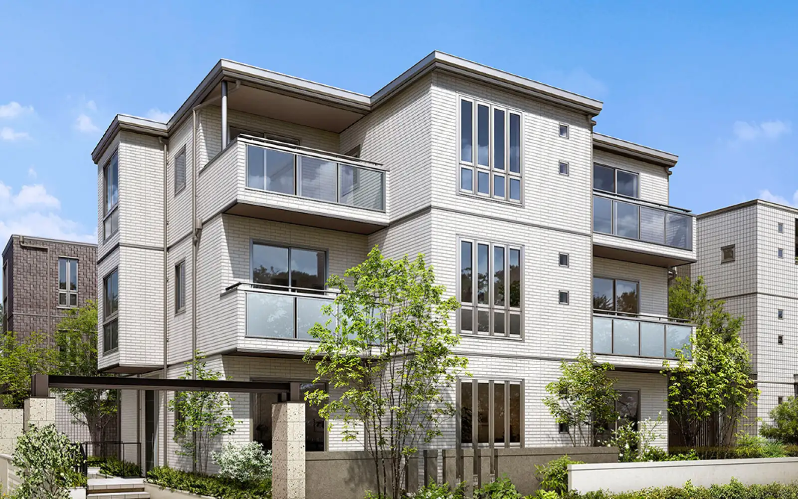
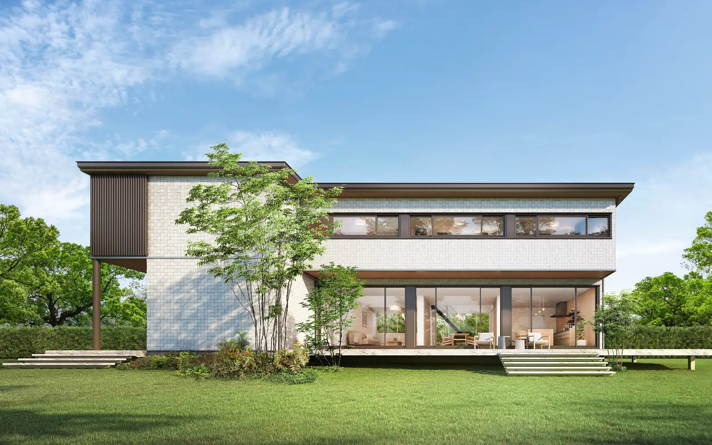
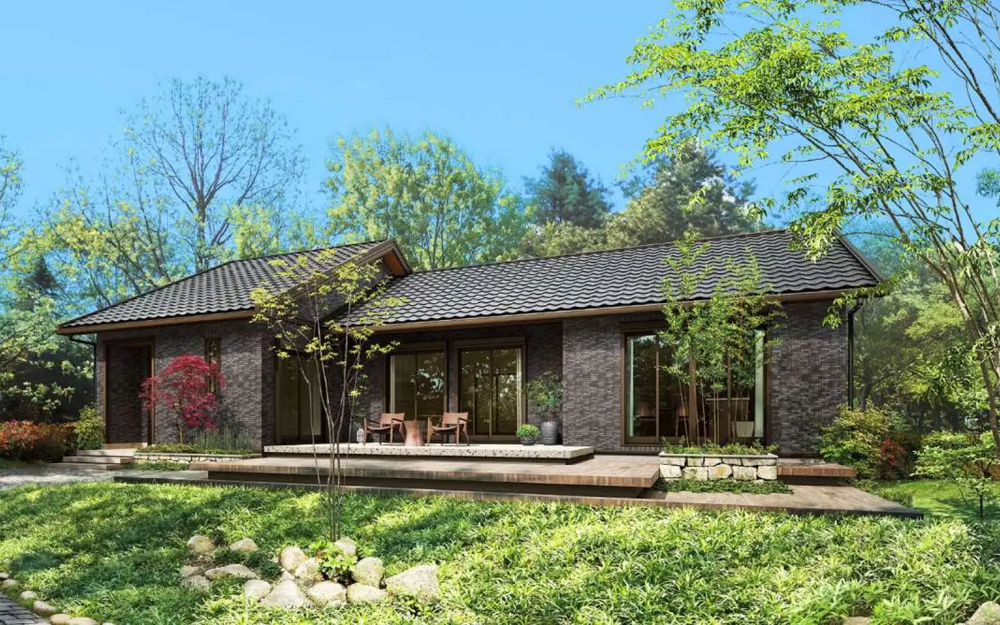
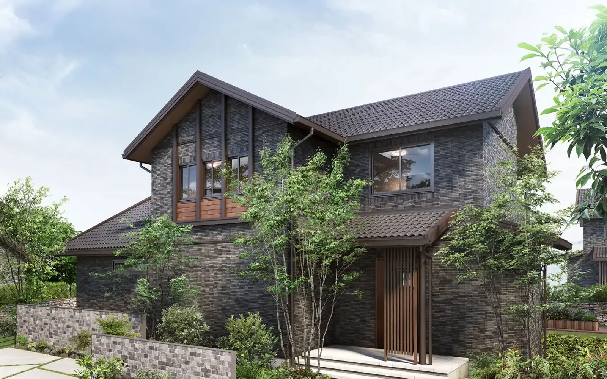

① 会社・基本データ

セキスイハイムは積水化学工業株式会社 住宅カンパニーの住宅ブランド。1970年に住宅事業に参入し、業界で唯一「住宅を工場で精密に造る工業製品である」という思想を貫くユニット工法のパイオニア。工場で約80%を完成させてから現場搬入するため、天候・職人スキルの影響を受けにくく品質が極めて安定している点が最大の特徴。
積水ハウス（Sekisui House）とは別会社。セキスイハイムは積水化学工業の住宅事業、積水ハウスは独立企業。工法も思想も全く異なる。
| 項目 | 内容 |
|---|---|
| ブランド名 | セキスイハイム（SEKISUI HEIM） |
| 事業主体 | 積水化学工業株式会社 住宅カンパニー |
| 事業主体設立 | 1947年3月3日（積水化学工業設立）／1970年住宅事業参入 |
| 代表者（積水化学工業） | 代表取締役社長 清水郁輔（2026年4月時点） |
| 住宅カンパニー本部 | 東京本社：東京都港区虎ノ門2-10-4 |
| 資本金（積水化学） | 1,000億円 |
| 売上高（住宅カンパニー単体） | 5,284億円（2025年3月期） |
| 従業員数（住宅カンパニーグループ） | 約10,500名 |
| 年間販売戸数 | 約9,300棟（2024年度・戸建注文住宅） |
| 累計建築戸数 | 約68万棟超（1971年〜2024年累計） |
| 対応エリア | 北海道〜九州（沖縄除く）／販売会社18社体制 |
| 工場 | 国内15ヶ所 |
| 工場生産率 | 約80%（業界最高水準） |
グループ会社（主な販売会社）
- 東京セキスイハイム
- セキスイハイム中部（愛知・岐阜・三重・福井・石川・富山）
- セキスイハイム近畿
- セキスイハイム東北
- ほか全国18販売会社
一言で言うと？
太陽光発電搭載率は業界トップクラスで「快適エアリー」による全館空調・ZEHに強い。品質の再現性・光熱費ゼロを目指したい合理的な判断層に支持されている。
② 商品ラインナップと坪単価
セキスイハイムの商品は大きく 鉄骨系ユニット（ボックスラーメン構造）と 木質系ユニット（2×6グランツーユー）の2系統に分かれる。




鉄骨ユニット系（主力）
| 商品名 | 坪単価目安（2026年） | 特徴 |
|---|---|---|
| ザ・デザイナーズハイム | 100〜140万円 | フラッグシップ級のデザイナーズモデル |
| ザ・デザイナーズハイム D1（平屋） | 100〜140万円 | デザイナーズ平屋仕様 |
| エルビア（Elvia） | 95〜130万円 | 2025年以降のフラッグシップ。高級感のある外観・内装 |
| パルフェ | 90〜120万円 | 鉄骨ボックスラーメン最上位。磁器タイル「レジデンスタイル」標準 |
| パルフェ-bjスタイル | 88〜115万円 | パルフェ派生のスタンダード |
| スマートパワーステーション プラス | 85〜110万円 | 大容量太陽光＋蓄電池の進化版 |
| スマートパワーステーション FX | 85〜110万円 | 旧FRの後継。陸屋根全面に大容量太陽光搭載。ZEH主力 |
| スマートパワーステーション FXアーバン | 90〜115万円 | 3階建て都市型・狭小地向け |
| スマートパワーステーション GR | 85〜110万円 | スマートGルーフ（切妻屋根）採用 |
| ドマーニ | 80〜100万円 | 鉄骨ボックスラーメンのミドルグレード |
| デシオ（DESIO） | 95〜130万円 | 3階建て鉄骨ユニット・狭小地／二世帯対応 |
| ライフプランニングハイム | 85〜110万円 | 可変設計モデル |
| セキスイハイムの平屋 | 85〜110万円 | 鉄骨系平屋プラン |
木質ユニット系（2×6）
| 商品名 | 坪単価目安（2026年） | 特徴 |
|---|---|---|
| ザ・デザイナーズグランツーユー | 95〜120万円 | 木質2×6のデザイナーズモデル |
| グランツーユー | 75〜95万円 | 2×6枠組壁工法＋ユニット化 |
| グランツーユー FR | 80〜100万円 | 高性能仕様の木質ユニット |
| セキスイハイムの木の平屋 | 80〜100万円 | 木質系平屋プラン |
坪数別の建築総額目安
| 延べ床面積 | 本体価格目安 | 建築総額目安 |
|---|---|---|
| 30坪 | 約2,550〜3,300万円 | 約3,200〜4,100万円 |
| 35坪 | 約3,000〜3,800万円 | 約3,800〜4,800万円 |
| 40坪 | 約3,400〜4,400万円 | 約4,300〜5,500万円 |
坪単価の推移（スマートパワーステーション基準・概算）
| 年 | 坪単価目安 | 備考 |
|---|---|---|
| 2018年 | 約70〜80万円 | 太陽光標準化が浸透 |
| 2021年 | 約75〜85万円 | ウッドショック影響薄（鉄骨主力） |
| 2023年 | 約80〜95万円 | 鋼材・人件費高騰 |
| 2025年 | 約85〜105万円 | ZEH補助金と合わせて単価上昇 |
| 2026年 | 約85〜110万円 | タイル標準化・蓄電池標準化で上振れ |
③ 構造・工法（ユニット工法）

セキスイハイムの最大の特徴は、住宅を「箱（ユニット）」単位で工場生産し、現場で組み立てるユニット工法である。
| 項目 | 詳細 |
|---|---|
| 工法名 | ユニット工法（鉄骨ラーメン構造／木質2×6ラーメン構造） |
| ユニットサイズ | 幅約2.4m × 長さ約5.7m × 高さ約2.8m（最大） |
| 1邸あたりユニット数 | 10〜15ユニットが標準（30〜40坪の場合） |
| 工場生産率 | 約80%（業界平均30〜40%を大きく上回る） |
| 現場作業期間 | 基礎完成後、据え付け1日・完成まで1〜2ヶ月 |
鉄骨ボックスラーメン構造（スマートパワーステーション／パルフェ／デシオ）
- 高張力鋼材の柱・梁を剛接合した「ボックスラーメン」構造
- 柱・梁・床・天井の6面体フレームを一体化したユニットが建物全体を支える
- 地震エネルギーを6面体で分散吸収し、耐力壁や筋交いに頼らない大空間設計が可能
木質系2×6ユニット（グランツーユー／グランツーユーFR）
- 2×6材（38×140mm）による枠組壁工法をユニット化
- 壁厚140mmで充填断熱が豊富にとれる
- 木の温もりを活かしつつ、鉄骨系と同等の工場生産率を実現
工場生産のメリット
- 空調管理された工場で、職人スキル差・天候の影響を受けずに製造
- 0.5mm単位のレーザー計測による組立検査
- 構造材・断熱材は工場で施工済み。現場の雨染みリスクほぼゼロ
- 据え付け当日に屋根まで完成。雨仕舞いが1日で完結
- 工場一括加工により現場廃材を従来比70%削減
デメリット・制約
- 幅2.4m × 長さ5.7mのグリッドに間取りが縛られる
- ユニット継ぎ目をまたぐ大開口は追加補強が必要（コスト増）
- クレーン搬入のため、傾斜地・狭小地は搬入経路の確保が必須
- 将来の増築は可能だが、在来工法より制約が多い
④ 耐震性能
| 項目 | 詳細 |
|---|---|
| 耐震等級 | 全棟: 耐震等級3（最高等級・消防署／警察署と同等） |
| 構造計算 | 全棟で許容応力度計算を実施 |
| 独自名称（鉄骨系） | ボックスラーメン構造＋GAIASS（ガイアス／ハイブリッド耐震システム） |
| 独自名称（木質系） | 2×6モノコック構造＋ユニット接合 |
GAIASS（鉄骨系ハイブリッド耐震システム）
セキスイハイム鉄骨系の耐震思想は、ボックスラーメン構造（6面体の剛接合ユニット）と高性能外壁を組み合わせた複合型の地震動吸収システム「GAIASS（ガイアス）」。制震装置・免震装置は搭載せず、構造躯体そのものの強さで耐震等級3を実現する設計思想。エネルギーは6面体ユニット全体で分散吸収する。
実大振動実験の実績
| 項目 | 詳細 |
|---|---|
| 実験回数 | 阪神・淡路大震災クラス（震度7）の揺れで繰り返し加振 |
| 対象 | パルフェ・スマートパワーステーション実大モデル |
| 結果 | 構造躯体・外壁タイルに損傷なし。居住継続可能 |
| 耐震等級3+α | 繰り返し地震に対する耐性を強調 |
基礎工法
- 地盤調査に基づく「地盤保証20年」を標準付帯
- ベタ基礎＋高強度コンクリート（設計基準強度24N/mm²以上）
- 独自の「据え付け基礎」でユニットと基礎を剛接合
熊本地震・能登半島地震での実績
2016年熊本地震、2024年能登半島地震において、セキスイハイム施工物件の大半が居住継続可能だったと公式レポート。繰り返しの震度7に対してもユニット構造が崩壊せず、外壁タイルの剥落事例も少数。
⑤ 断熱性能
UA値（外皮平均熱貫流率）
| 商品 | UA値（代表値） | 断熱等級 |
|---|---|---|
| スマートパワーステーション（快適エアリー＋あったかハイム仕様） | 0.46 W/m²K | 等級6 |
| パルフェ（標準） | 0.60 W/m²K | 等級5 |
| パルフェ（高性能仕様） | 0.46 W/m²K | 等級6 |
| グランツーユー（2×6 木質） | 0.46 W/m²K | 等級6 |
| グランツーユーFR（高性能仕様） | 0.36 W/m²K | 等級6〜7 |
| デシオ | 0.50〜0.60 W/m²K | 等級5〜6 |
| （参考）国の省エネ基準 | 0.87 W/m²K | 等級4 |
断熱仕様の詳細
| 部位 | 鉄骨系仕様 | 木質系（グランツーユー）仕様 |
|---|---|---|
| 外壁断熱材 | 高性能ウレタンフォーム50mm＋グラスウール100mm | 高性能グラスウール140mm（2×6充填） |
| 天井断熱材 | 高性能グラスウール200mm | 吹込みセルロースファイバー300mm |
| 床断熱材 | 押出法ポリスチレンフォーム65mm | 高性能グラスウール89mm |
| 窓（標準） | 高断熱アルミ樹脂複合サッシ＋Low-E複層ガラス | 樹脂サッシ＋Low-E複層ガラス |
| 窓（オプション） | 樹脂サッシ＋トリプルガラス | 樹脂サッシ＋トリプルガラス |
鉄骨住宅の「熱橋問題」への対策
鉄は木の約500倍熱を通しやすい。セキスイハイムは鉄骨ユニットの主要接合部に「断熱ブリッジカット」を施し、室内側に樹脂パーツを挟むことで熱橋を軽減。ただし一条工務店の木造2×6（UA値0.25）には及ばず、「鉄骨HMの中では断熱性能は高水準」という位置づけ。
他社との断熱性能比較
| ハウスメーカー | UA値 | 断熱等級 |
|---|---|---|
| 一条工務店（i-smart） | 0.25 | 等級7 |
| セキスイハイム（スマパワ快適エアリー） | 0.46 | 等級6 |
| セキスイハイム（グランツーユー） | 0.46 | 等級6 |
| 住友林業 | 0.46 | 等級5〜6 |
| 三井ホーム | 0.43 | 等級5〜6 |
| 積水ハウス（木造） | 0.46〜0.60 | 等級5 |
| ヘーベルハウス | 0.55〜0.60 | 等級5 |
| パナソニックホームズ | 0.50〜0.60 | 等級5 |
| トヨタホーム（ユニット工法） | 0.50〜0.60 | 等級5 |
⑥ 気密性能
C値（相当隙間面積）
| 項目 | 数値 |
|---|---|
| 公表C値（鉄骨系） | 非公表（商品カタログ上は記載なし） |
| 実測事例（鉄骨系 スマパワ） | 2.0〜3.0 cm²/m²（施主ブログ報告値） |
| 公表C値（グランツーユー／グランツーユーFR） | 約1.0 cm²/m²（木質2×6の効果） |
| 全棟測定 | 実施せず（一部地域・希望者のみ有償測定） |
| 一般住宅の目安 | 1.0〜2.0 cm²/m² |
気密性能の背景
- ユニット工法のため、ユニット同士の接合部に多数の継ぎ目が発生する構造上の特性
- 工場生産で各ユニット内部は高精度で仕上がるが、現場での「ユニット間継ぎ目」の気密処理が性能を左右する
- 結果として「高気密」を売りにする一条工務店（全棟C値0.59）や木造先進工務店には及ばない
セキスイハイムの気密への考え方
セキスイハイムは公式サイトでC値そのものを前面に出さず、「第一種熱交換換気＋全館空調（快適エアリー）」による計画換気で空気質をコントロールする戦略を取っている。高気密を追求するのではなく、「熱交換換気で給排気バランスを設計」する思想。
他社との気密性能比較
| ハウスメーカー | C値（公表データ） | 全棟測定 |
|---|---|---|
| 一条工務店 | 0.59（全棟平均） | 全棟実施 |
| 住友林業 | 非公表 | 希望者のみ |
| セキスイハイム（鉄骨） | 非公表 | 実施せず |
| セキスイハイム（グランツーユー） | 約1.0 | 実施せず |
| 積水ハウス | 非公表 | 実施せず |
| 三井ホーム | 非公表 | 希望者のみ |
| ヘーベルハウス | 非公表 | 実施せず |
気密性能を重視する方は、鉄骨系よりも木質系のグランツーユー／グランツーユーFRを選ぶか、気密測定を希望者オプションとして確認することが望ましい。
⑦ 換気・空調（快適エアリー）
快適エアリー（セキスイハイム独自の全館空調）
| 項目 | スペック |
|---|---|
| 方式 | 第一種全熱交換換気＋床下冷暖房＋空気清浄の一体型システム |
| 設置場所 | 1階床下に熱源機・空調ユニットを格納 |
| 給気方式 | 床下から各室へダクト給気（吹出口は床面） |
| 換気システム | 全熱交換型換気（熱交換効率 約73%） |
| 空気清浄 | PM2.5対応フィルター＋花粉フィルター（99%カット） |
| 冷暖房範囲 | 1階全体＋階段・廊下。2階は別途エアコン併用が基本 |
| 電気代目安 | 月5,000〜12,000円（延床30坪・地域による） |
| メンテナンス | フィルター清掃: 月1回（自分で可） / 交換: 2年ごと（有償） |
快適エアリーのメリット
- 1階床下から温風・冷風で足元が冷えにくい
- 花粉・PM2.5を遮断しつつ新鮮空気を供給
- 熱交換で冷暖房ロスを抑制
デメリット・注意点
- 1階のみが基本。2階は別途エアコン必要
- 床下メンテ。交換費用30〜50万円規模
- 加湿機能なし（別途加湿器）
- 熱源機故障時は全館で停止リスク
あったかハイム（寒冷地向け仕様）
| 項目 | スペック |
|---|---|
| 対象エリア | 北海道・東北・長野など寒冷地 |
| 特徴 | 快適エアリー＋高断熱仕様＋蓄熱暖房機の組み合わせ |
| 暖房方式 | 蓄熱式温水暖房（深夜電力利用） |
| 電気代 | 北海道実例で月8,000〜15,000円（従来暖房の半額程度） |
電気代データ（実例）
| 条件 | 年間電気代 | 備考 |
|---|---|---|
| 太陽光8kW＋蓄電池7kW＋快適エアリー（鉄骨系 35坪） | 実質3〜6万円/年 | 売電収益含む |
| 太陽光なし＋快適エアリーのみ（35坪） | 約18〜24万円/年 | 一般的な世帯 |
| あったかハイム（北海道 40坪） | 約20〜28万円/年 | 寒冷地標準 |
⑧ ZEH・太陽光発電
セキスイハイムの最大の強みは太陽光発電・蓄電池への取り組み。
太陽光発電の搭載率
| 項目 | 実績 |
|---|---|
| 2024年度 太陽光搭載率（戸建注文住宅） | 約82%（業界トップクラス） |
| 累計太陽光搭載邸数 | 約25.4万棟（2025年3月末時点・1997年〜累計） |
| 平均搭載容量 | 8〜12kW（スマートパワーステーション基準） |
| 最大搭載容量 | 20kW超（切妻GRモデルや大屋根プラン） |
ZEH（ネット・ゼロ・エネルギー・ハウス）普及実績
| 項目 | 数値 |
|---|---|
| 2023年度 ZEH普及率 | 約96%（戸建注文住宅・北海道除く／7年連続で過去最高更新） |
| 蓄電池採用率（2023年度 新築戸建） | 約87%（累計6.8万棟超・2024年3月末時点） |
| 累計ZEH邸数 | 約8万棟（ZEH基準達成邸） |
| HEMS搭載率 | ほぼ全棟標準 |
| 業界順位 | 7年連続ZEH普及率トップクラス |
スマートパワーステーションの強み
- 陸屋根全面搭載: FX型（旧FR）は4寸勾配なしのフラット屋根に太陽光を敷き詰め、一般的な切妻屋根の2倍の搭載容量
- 東西南北どの向きでも高効率: フラット屋根に30°角度をつけた太陽光架台で方位不問
- e-Pocket（蓄電池）標準化: スマパワではホームバッテリー7kWhが標準搭載
蓄電池システム
| 項目 | スペック |
|---|---|
| e-Pocket（エネポケット） | セキスイハイム独自蓄電池。7〜12kWh |
| 停電時の自立運転 | 最大約3日間の生活電力を確保（節電モード） |
| V2H対応 | オプションでEV（電気自動車）との連携可能 |
| HEMS連携 | スマホアプリで電力使用・発電・売電をリアルタイム管理 |
売電実績（施主報告値）
| 条件 | 年間売電収入 | 備考 |
|---|---|---|
| 8kW搭載 | 約15〜22万円 | FIT売電（2025年新築: 15円/kWh） |
| 12kW搭載 | 約22〜32万円 | 10kW以上は20年間固定買取 |
| 20kW搭載 | 約40〜55万円 | 大屋根プラン（非住宅扱いFIT対象） |
ARCHIST視点：太陽光・ZEHで確実に光熱費ゼロを目指したい方はセキスイハイムが最有力候補。特にスマートパワーステーションFX／プラスの陸屋根全面搭載は他社が真似できない構造。
⑨ デザイン


外壁（磁器タイル／サイディング）
| 商品 | 外壁仕様 |
|---|---|
| パルフェ | レジデンスタイル（磁器タイル）標準。色柄は約30種 |
| スマートパワーステーション | レジデンスタイル／セラミックサイディング選択可 |
| デシオ | セラミックサイディング／タイル選択可 |
| グランツーユー／グランツーユーFR | ラムダサイディング（高耐候）標準。塗り壁風オプションあり |
レジデンスタイル（磁器タイル）の特徴
- 1,300℃で焼成した磁器質タイル
- 吸水率1%以下で凍害に強く、寒冷地OK
- メンテナンスフリー: 塗り替え不要で30年以上の耐久性
- 外壁再塗装コスト（100〜200万円規模）が生涯不要になるメリット
内装・設備
| 設備 | 特徴 |
|---|---|
| キッチン | LIXIL／パナソニック／クリナップの中から選択。セキスイ独自品ではない |
| バス | TOTO／LIXILのユニットバス。一般的な選択肢 |
| 床材 | 突板フローリング（朝日ウッドテック等）／シートフローリング |
| 建具 | DAIKEN／Woodone／永大産業（標準選択） |
| 造作家具 | オリジナル収納（ファミリー収納・シューズクローク）充実 |
セキスイハイム固有の設計制約
| カテゴリ | 制約内容 |
|---|---|
| ユニットグリッド | 幅2.4m × 長さ5.7mのユニット単位で間取りが決まる |
| 大開口の制限 | ユニット継ぎ目をまたぐ窓は追加費用で実現可能だが自由度は低い |
| 吹き抜け | ユニットを抜く必要があり、構造計算でコスト増 |
| 勾配天井 | スマートパワーステーションFX／プラスは陸屋根のため勾配天井不可 |
| 外観バリエーション | 切妻GR型・FX型・FXアーバン型でデザインが大きく異なる |
| 間取り自由度 | 全体的に在来軸組・BF構法などと比較すると低い |
外観デザインの特徴
- スマートパワーステーション: モダン・キュービック。白・グレー基調で「ソーラーハウス」感が強い
- パルフェ: フラット陸屋根＋タイル壁で高級住宅感
- グランツーユー: 切妻屋根＋ラムダサイディングで「洋風」寄り
- ドマーニ（既存）: 三角屋根＋ナチュラル外観で落ち着いた印象
ARCHIST視点：「デザイン重視」の方は住友林業・三井ホームが優勢。セキスイハイムは機能美寄り。タイル外壁の長期メンテコストを加味した「30年総コスト」で判断したい方に向く。
⑩ 保証・メンテナンス
保証体系（2025年以降新築）
| 内容 | 期間 | 条件 |
|---|---|---|
| 構造躯体（ユニット） | 初期30年 → 最長60年サポート | 引渡し後3回の定期点検＋25年目までの5年ごと定期診断＋必要メンテナンスで延長 |
| 防水（雨水侵入） | 初期30年 → 最長60年サポート | 同上 |
| 瑕疵担保責任 | 10年間（品確法） | 法定 |
| 防蟻（シロアリ） | 10年 → 5年ごと有償再処理で延長 | 有償 |
| 外壁磁器タイル | 30年（材料保証） | メーカー保証 |
| 太陽光発電システム | 機器20年・出力20年（出力80%保証） | 2025年以降新築 |
| 蓄電池（e-Pocket） | 10年（容量60%保証） |
フィットアフターサービス
- 専用ダイヤル「お客様センター」24時間365日対応
- スマホアプリ「ハイムOwnersClub」から点検依頼・部品購入
- オーナーIDで過去の施工図面・設備仕様を永年保管
定期点検スケジュール
引渡し後: 3ヶ月 → 1年 → 2年 → 5年 → 10年 → 15年 → 20年 → 30年 → 40年 → 50年 → 60年
延長保証のコスト目安
- 20年目の有償点検・メンテナンス費: 約80〜150万円（外壁・シーリング・防水の打ち直し）
- 30年目: 約100〜200万円（屋根・防水大規模改修）
- 60年まで保証延長した場合の累計メンテコスト: 約300〜500万円（30坪規模）
他社との保証期間比較
| ハウスメーカー | 初期保証 | 最大延長 | 特徴 |
|---|---|---|---|
| 一条工務店 | 30年 | 30年 | シロアリ予防10年目・20年目無償 |
| 住友林業 | 30年 | 60年 | 96.3%が長期優良住宅取得 |
| 積水ハウス | 30年 | 永年 | ユートラスシステムで建物がある限り延長可能 |
| セキスイハイム | 30年 | 60年サポート | 定期点検＋5年ごと診断で延長 |
| ヘーベルハウス | 30年 | 60年 | ホームドクター制度・60年無償点検 |
| 三井ホーム | 10年 | 60年 | 有償点検・メンテで延長 |
| トヨタホーム | 30年 | 60年 | 鉄骨系ユニット工法 |
セキスイハイムの初期保証30年は業界主要他社と同水準。最長60年のアフターサポート体系＋工場生産ならではの品質再現性で、長期的な品質安定性は高水準。
⑪ 建築期間（工場生産ならではの短さ）
各フェーズの期間
| フェーズ | 期間目安 |
|---|---|
| 展示場見学〜仮契約 | 1〜3ヶ月 |
| 仮契約〜本契約（間取り打合せ） | 2〜4ヶ月（他社より短い） |
| 本契約〜着工（詳細設計・確認申請） | 2〜3ヶ月 |
| 着工〜据え付け（基礎工事） | 1〜1.5ヶ月 |
| 据え付け（ユニット搬入・組立） | 1日（最大の特徴） |
| 据え付け〜引渡し（内装仕上げ） | 1.5〜2ヶ月 |
| 合計（初回来場〜引渡し） | 8〜14ヶ月 |
| 着工〜引渡し | 2.5〜3.5ヶ月（業界最短クラス） |
据え付け1日の流れ
| 時刻 | 工程 |
|---|---|
| 7:00 | 大型トレーラーでユニット搬入開始 |
| 8:00〜14:00 | クレーンでユニットを順次吊り上げ、基礎に据え付け |
| 14:00〜17:00 | ユニット同士の接合・屋根仕上げ・外壁一部取付 |
| 17:00 | 屋根・外壁・窓まで完成。雨仕舞い完結 |
| 翌日以降 | 内装工事・電気配線・給排水工事（室内中心） |
工期短縮のメリット
| メリット | 金額換算 |
|---|---|
| 仮住まい費用削減 | 月8〜15万円 × 短縮月数 = 30〜60万円削減 |
| ローン金利負担減 | 着工から引渡しまでの金利負担が短縮 |
| 引越し回数減 | 仮住まい→新居の1回で済む |
| 工期遅延リスク低 | 現場工期が短いので天候・職人不足の影響を受けにくい |
他社との工期比較
| ハウスメーカー | 着工〜引渡し目安 |
|---|---|
| セキスイハイム | 2.5〜3.5ヶ月（業界最短クラス） |
| トヨタホーム（ユニット） | 3〜4ヶ月 |
| パナソニックホームズ（鉄骨） | 4〜5ヶ月 |
| 一条工務店 | 4〜6ヶ月 |
| 住友林業 | 5〜7ヶ月 |
| 積水ハウス | 4〜6ヶ月 |
| 三井ホーム | 5〜6ヶ月 |
| ヘーベルハウス | 4〜5ヶ月 |
ARCHIST視点：「できるだけ早く入居したい」「仮住まいのコストを抑えたい」方にはセキスイハイムの工期短縮は大きな武器。賃貸契約満了が近い方、子の学校区の関係で急ぐ方に強くオススメ。
⑫ 客層・向き不向き
典型的な施主プロファイル
| 属性 | 傾向 |
|---|---|
| 年齢 | 35〜50代が中心（一条よりやや高め） |
| 世帯構成 | 共働きファミリー／二世帯／子育て後の建替え層 |
| 世帯年収 | 700〜1,000万円がボリュームゾーン |
| 最低年収目安 | 世帯年収500万円〜 |
| 価値観 | 「品質の確実性・メンテナンスフリー・省エネ」重視。理系・合理主義タイプ |
| 情報収集 | 一条・住友林業・積水ハウスと比較検討する層が大半 |
| 建替え比率 | 約35%（業界平均より高い。親世代からの紹介が多い） |
セキスイハイムを選ぶ理由TOP3
- 工場生産による品質の安定性（職人スキル差を排除）
- 太陽光・ZEHの実績（光熱費ゼロを目指せる）
- 工期の短さ（据え付け1日で仮住まい費用削減）
愛知県の特徴（ARCHIST提供エリア）
- 名古屋エリアはセキスイハイム中部が販売会社。豊田・岡崎・一宮など製造業都市で根強い人気
- トヨタホーム（愛知発祥・同じユニット工法）との競合が激しい
- 愛知県の戸建販売シェア: セキスイハイム中部は上位3〜5位（2024年推計）
営業攻略（値引きの相場）
| 項目 | 相場 |
|---|---|
| 平均値引き率 | 5〜10%（本体価格） |
| 最大値引き率 | 15〜20%が上限 |
| 金額換算（4,000万円の場合） | 平均200〜400万円、最大600〜800万円 |
| オプションサービス | 外構10〜20万円分サービス、蓄電池アップグレード無料等 |
値引きのコツ
- 決算期を狙う: 積水化学工業の決算は3月・9月。決算の1〜2ヶ月前（1〜2月／7〜8月）に本気度を示すと値引き交渉が進みやすい
- 相見積もりを出す: トヨタホーム・パナソニックホームズ・積水ハウスの見積書を持参
- 紹介制度を使う: 既存オーナーからの紹介で3〜5%値引き、またはオプション無償化
- モニター契約: モデルハウスの撮影・取材に協力するモニター契約で5〜10%値引きの事例あり
向いている人／向かない人
向いている人
- 太陽光・ZEHで光熱費ゼロを目指したい
- 工場生産の品質安定性を重視
- 工期を短くしたい（据え付け1日）
- 1Fフロアの全館空調（快適エアリー）を求めたい
- 性能を数値で比較する合理主義
- 愛知の製造業エリアでブランド実績を重視
向かない人
- 間取り・デザインの自由度を最優先 → 住友林業／積水ハウス
- 自然素材・無垢の温かみ → 住友林業／スウェーデンハウス
- 高気密（C値0.5以下）最優先 → 一条工務店
- 2Fまで全館空調 → パナソニックホームズ／トヨタホーム
- 35年超の初期保証／永年保証 → パナソニックホームズ／積水ハウス
- 狭小地・旗竿地で搬入経路が取れない
⑬ 他社比較・後悔事例・FAQ
他社比較表（5社比較）
| 項目 | セキスイハイム | トヨタホーム | パナホームズ | 積水ハウス | ダイワ |
|---|---|---|---|---|---|
| 坪単価目安 | 85〜110万 | 80〜105万 | 90〜120万 | 85〜120万 | 85〜115万 |
| UA値 | 0.46 | 0.50〜0.60 | 0.50〜0.60 | 0.46〜0.60 | 0.50〜0.60 |
| C値 | 非公表 | 非公表 | 非公表 | 非公表 | 非公表 |
| 構造 | 鉄骨ユニット／木質2×6 | 鉄骨ユニット | 鉄骨＋大型パネル | 鉄骨／木造 | 鉄骨ラーメン |
| 設計自由度 | △ | △ | ○ | ◎ | ◎ |
| 太陽光搭載率 | 約82% | 約70% | 約60% | 約55% | 約50% |
| 全館空調 | 快適エアリー（1F標準） | スマート・エアーズ（OP） | エアロハス（OP） | エアキス（OP） | エグゼア（OP） |
| 保証（初期） | 30年 | 30年 | 35年 | 30年 | 30年 |
| 保証（最大） | 60年サポート | 60年 | 60年 | 永年 | 60年 |
| 工期 | 2.5〜3.5ヶ月 | 3〜4ヶ月 | 4〜5ヶ月 | 4〜6ヶ月 | 4〜5ヶ月 |
セキスイハイム vs トヨタホーム（最大のライバル）
| 比較軸 | セキスイハイム | トヨタホーム |
|---|---|---|
| 発祥 | 1971年ユニット工法化 | 1975年ユニット工法化 |
| 工場生産率 | 約80% | 約85%（業界最高） |
| 構造 | 鉄骨ボックスラーメン＋GAIASS | 鉄骨ラーメン＋パワースケルトン |
| 太陽光 | 約82%搭載・スマパワで大容量 | 約70%搭載 |
| 全館空調 | 快適エアリー（1F標準） | スマート・エアーズPLUS（全館） |
| 向く人 | 太陽光・ZEHを最重視 | 全館空調・保証期間重視 |
よくある後悔事例
後悔1: ユニット工法の間取り制約で理想プランが叶わなかった
「幅2.4mのユニット単位のため、キッチンを4.0m取りたいのに2.4mか4.8mの二択になった」「吹き抜けを作ろうとしたらユニット構造の制約で大幅に費用増」「大開口のリビング窓を入れたいが、ユニット継ぎ目の補強で数十万円加算」。
対策: 契約前にユニットグリッドの図面で理想間取りを確認。展示場の据え付けを実際に見学。
後悔2: 設計自由度の低さに後から気づいた
窓のサイズ・位置がユニットの柱位置で制限され、採光が思ったより取れなかった事例。対策は「ユニットの継ぎ目はどこに来るか」を早い段階で平面図に落とし込んで確認すること。
後悔3: 2階が暑い／寒い（快適エアリーが1Fのみ）
快適エアリーは1F床下設置のため2Fまで届かない。2Fは別途エアコン（+20〜30万円/台）が必要で、想定外のランニングコスト。対策：快適エアリーDUAL（2F対応型）を選ぶか、2Fエアコン設置を初期計画に組み込む。
後悔4: タイル外壁の割高感
レジデンスタイルは美しいがオプションで坪+3〜5万円（30坪なら100〜150万円）。将来シーリングの打ち直し費用（80〜150万円）は発生する点を聞いていなかったケースも。30年トータルコストでサイディング外壁と比較するのが賢明。
後悔5: 延長メンテナンスの費用が想定より大きい
初期保証30年・最長60年サポート。30年以降の延長条件として「5年ごとの定期診断＋必要メンテナンス」が求められる。20〜30年目の大規模メンテ費（80〜200万円）を事前に見込んでおく必要あり。
後悔6: 据え付け当日の周辺対応
大型クレーン車・トレーラーの搬入で一時的に道路を塞ぐ。近隣への事前挨拶が不十分だとクレーム対応に追われる。対策：据え付け日の1ヶ月前から近隣挨拶（菓子折り持参）を徹底。
後悔7: 独自設備の交換・修理が割高
快適エアリー・e-Pocket蓄電池はセキスイハイム独自品。20年後の交換時、他社製品に変えられず、専用品を購入する必要あり。修理部品も純正のみ。
後悔8: アフターサービスの対応スピードに地域差
都市部は即日対応可能だが、地方の販売会社では「1週間待ち」などの声。契約前に販売会社のアフターサービス体制（拠点数・対応時間）を確認。
よくある質問（FAQ）
セキスイハイムと積水ハウスは同じ会社？
ユニット工法は地震に強い？
坪単価はいくら？
工期はどれくらい？
断熱性能は高い？
気密性能（C値）は？
快適エアリーって何？
太陽光発電は標準装備？
値引きは可能？
間取りは自由に決められる？
設備はセキスイハイムのオリジナル？
アフターサービスは良い？
保証期間は？
グランツーユーはどんな人向け？
建てた後のリフォームは？
⑭ まとめ（ARCHIST視点）
- 工場生産率約80%による品質の再現性（業界最高水準）
- 太陽光搭載率約82%・ZEH普及率約96%の「光熱費ゼロ力」
- 据え付け1日・着工〜引渡し2.5〜3.5ヶ月の業界最短工期
- 全館空調「快適エアリー」を1F標準装備として採用可能
- レジデンスタイル（磁器タイル）で外壁再塗装コストが30年不要
- 繰り返し震度7に耐えるボックスラーメン＋GAIASS設計
- ユニットグリッド（2.4×5.7m）による間取り自由度の制約
- 鉄骨系は気密性能C値を非公表（実測値2.0〜3.0）
- 快適エアリーが1Fのみ標準・2Fは別途エアコン
- 独自設備（快適エアリー・e-Pocket）の交換は純正のみ・割高
- 狭小地・旗竿地・傾斜地での搬入困難リスク
- 20〜30年目の有償メンテ費が80〜200万円規模
こんな人に強くお勧め
太陽光・ZEHで光熱費ゼロ × 工場品質の再現性 × 短工期 を同時に叶えたい合理主義の方には、セキスイハイムが最有力候補。特に愛知県（製造業エリア）での建替え・二世帯検討層、「仮住まい費用を抑えて急ぎ入居したい」層との相性が良い。
比較必須・チェック必須
- 比較必須: トヨタホーム（同じユニット工法）、パナソニックホームズ（鉄骨・全館空調）、ダイワハウス（外張断熱）
- チェック必須項目: 据え付け可能な敷地条件、2F空調の計画、20年目以降のメンテ費用見積、販売会社のアフター体制
- 見積比較時は「本体価格」ではなく「建築総額（外構・太陽光・諸経費込み）」で比較
- 太陽光・蓄電池の標準装備は魅力だが、FIT売電価格（2025年15円/kWh）の下落を踏まえた投資回収シミュレーションを必ず実施
積水ハウスとの混同問題
- セキスイハイムは積水化学工業、積水ハウスは別の独立企業
- ユニット工法（セキスイハイム）と鉄骨ラーメン／木造シャーウッド（積水ハウス）は設計思想が全く異なる
- 家族・知人への説明時は必ず「セキスイハイム＝ユニット工法」「積水ハウス＝鉄骨／木造シャーウッド」と明示